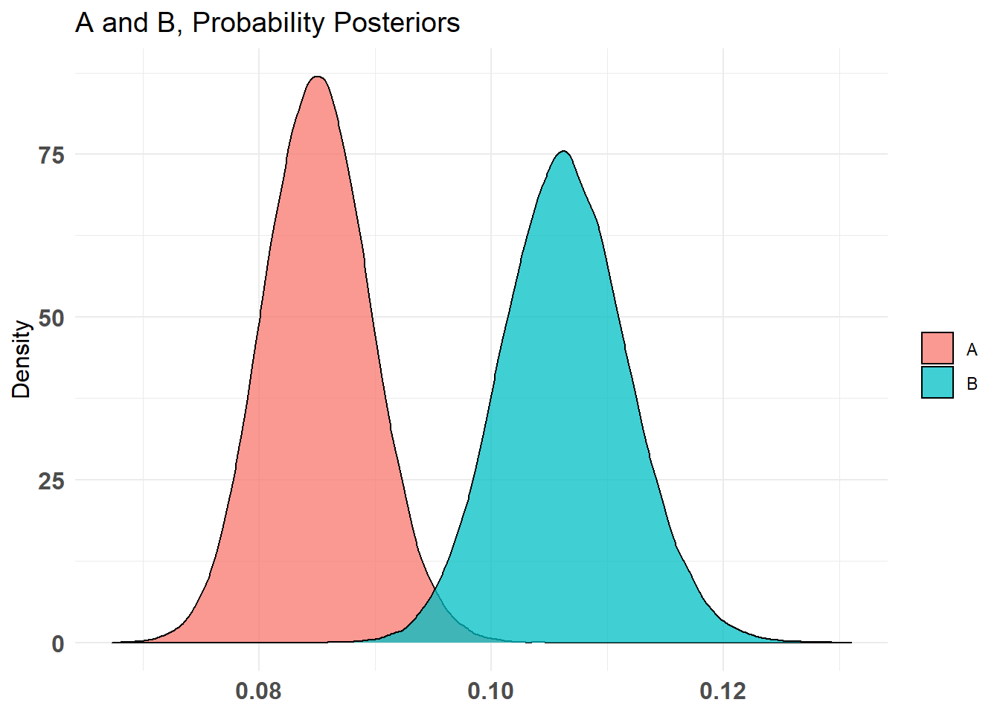
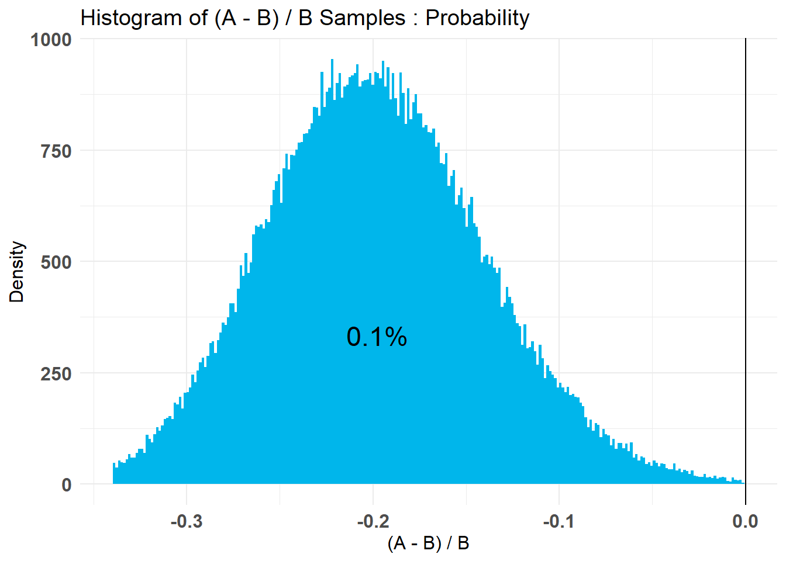

Neste artigo, aprenderemos os conceitos e a implementação do teste AB usando R. As campanhas de marketing devem influenciar um público-alvo e incentivá-lo a comprar um produto. Nesse processo, muitas perguntas surgem nas mentes de um varejista. Por ex. qual anúncio leva a mais vendas? Um bom percentual de desconto realmente atrai mais clientes? Quais slogans seriam melhores?
Até os ecommerces no Brasil, como Amazon e Flipkart, têm muitas perguntas sobre seus sites, designs de aplicativos e estratégias de marketing. Essas perguntas podem ser respondidas através da realização de um teste A / B.
Ao comparar duas versões de produtos (como A e B) para clientes semelhantes, são testados para ver qual grupo deve vender mais no mercado ou, às vezes, dois grupos de clientes A e B para produtos similares, para ver qual grupo devemos almejar. produtos, usamos testes A / B.
Por exemplo, para um site:
| Produto | Views | Cliks,Conversões/Vendas |
|---|---|---|
| A | 3450 | 225 |
| B | 3000 | 250 |
Hipótese nula: suposição de que não há diferença entre as taxas de conversão dos produtos A e B
Hipótese alternativa: há uma diferença entre as taxas de conversão dos produtos A e B
Para rejeitar a hipótese nula, precisamos de um valor-\(p\) menor que o nível de significância, ou seja, p$ <0,05$
#install.packages("pwr")
library(pwr)
######## Teste para igualdade de proporcoes para 2 amostras ############
prop.test(c (225, 250), c (3450, 3000))##
## 2-sample test for equality of proportions with continuity correction
##
## data: c(225, 250) out of c(3450, 3000)
## X-squared = 7.4563, df = 1, p-value = 0.006322
## alternative hypothesis: two.sided
## 95 percent confidence interval:
## -0.031299847 -0.004932037
## sample estimates:
## prop 1 prop 2
## 0.06521739 0.08333333O valor \(p\) é menor que 0,05, portanto, podemos rejeitar a hipótese de que as taxas de conversão são iguais.
Mas não se pode concluir diretamente que A e B tenham taxas de conversão diferentes ou vice-versa. Aqui, o verdadeiro comportamento subjacente não é conhecido, pois estamos tentando testar a hipótese realizando o experimento em uma amostra.
As estatísticas bayesianas nos testes A/B são baseadas principalmente em conhecimentos anteriores ou prévios de experimentos semelhantes e nos dados atuais. O conhecimento passado é conhecido como distribuição de probabilidade a priori e a posteriori, combinada com os dados atuais do experimento para concluir o teste em questão.
Nesse método, modelamos a métrica para cada variante. Temos conhecimento prévio sobre a taxa de conversão para A, que possui um certo intervalo de valores com base nos dados históricos. Após observar os dados de ambas as variantes, estimamos os valores mais prováveis ou as novas evidências para cada variante.
Agora precisamos saber:
O que é distribuição de probabilidade posteriori ?
Probabilidade posteriori é a probabilidade de um evento ocorrer depois que todas as informações básicas sobre o evento foram levadas em consideração. Essa probabilidade posteriori atua como um ajuste na probabilidade anterior:
\[ posteriori=\frac{\mbox{verossimilhança (nova evidência)}\times\mbox{prop. prob. a priori}}{\mbox{evidência da prob. a priori}} \] Ao calcular essa distribuição posterior para cada variante, podemos expressar a incerteza sobre nossas expectativas por meio de declarações de probabilidade.
#install.packages(“bayesAB”)
library(bayesAB)Usando o exemplo anterior:
library (bayesAB)
A_binom <- rbinom (3450, 1, 0.065)
B_binom <- rbinom (3000, 1, 0.083)Sobre a função rbinom rbinom (n, tamanho, p) onde: + \(n =\) número de observações
tamanho = número de tentativas
\(p =\) vetor de probabilidade
Escolhemos o nível alfa e beta do conhecimento prévio que tínhamos sobre parâmetros. Aqui eu mostrei o teste com dois níveis dos valores. Geralmente, usamos o método de tentativa e erro para fazer com que a distribuição se pareça com a nossa distribuição anterior imaginada. O pico deve ser centrado sobre nossa média esperada, com base em experiências anteriores.
plotBeta (1, 1) plotBeta (100, 200) ## um range mais especifico para pAB1 <- bayesTest (A_binom, B_binom,
priors = c ('alpha' = 1, 'beta' = 1),
distribution = 'bernoulli')Salvando os outputs em teste AB2:
AB2 <- bayesTest (A_binom, B_binom,
priors = c ('alpha' = 100,'beta' = 200),
distribution = 'bernoulli')
AB2 <- bayesTest (A_binom, B_binom,
priors = c ('alpha' = 100,'beta' = 200),
distribution = 'bernoulli')Aqui eu verifiquei o teste AB2 com um valor alfa e beta de 100 e 200, respectivamente. Você também pode verificar os gráficos e resultados para AB1.
Vamos imprimir as entradas que fizemos e as estatísticas resumidas dos dados.
print(AB2)## --------------------------------------------
## Distribution used: bernoulli
## --------------------------------------------
## Using data with the following properties:
## A B
## Min. 0.00000000 0.00000000
## 1st Qu. 0.00000000 0.00000000
## Median 0.00000000 0.00000000
## Mean 0.06463768 0.07766667
## 3rd Qu. 0.00000000 0.00000000
## Max. 1.00000000 1.00000000
## --------------------------------------------
## Conjugate Prior Distribution: Beta
## Conjugate Prior Parameters:
## $alpha
## [1] 100
##
## $beta
## [1] 200
##
## --------------------------------------------
## Calculated posteriors for the following parameters:
## Probability
## --------------------------------------------
## Monte Carlo samples generated per posterior:
## [1] 1e+05summary (AB2)## Quantiles of posteriors for A and B:
##
## $Probability
## $Probability$A
## 0% 25% 50% 75% 100%
## 0.06611784 0.08301421 0.08608761 0.08919908 0.10605996
##
## $Probability$B
## 0% 25% 50% 75% 100%
## 0.07792513 0.09728992 0.10079826 0.10440269 0.12429006
##
##
## --------------------------------------------
##
## P(A > B) by (0)%:
##
## $Probability
## [1] 0.01709
##
## --------------------------------------------
##
## Credible Interval on (A - B) / B for interval length(s) (0.9) :
##
## $Probability
## 5% 95%
## -0.24549047 -0.03449407
##
## --------------------------------------------
##
## Posterior Expected Loss for choosing B over A:
##
## $Probability
## [1] 0.1750507O resumo fornece o intervalo crível. Os intervalos bayesianos tratam seus limites como fixos e o Parâmetro estimado como uma variável aleatória, enquanto os intervalos de confiança freqüentistas tratam seus limites como variáveis aleatórias e parâmetros como o valor fixo.
Também mostra que \(p(A> B)\) é de 0,00068%. Portanto, B é muito melhor que A. E a perda posterior esperada para escolher B sobre A é baixa.
plot (AB2)
As médias são bastante separadas, mas há uma sobreposição mínima entre distribuições.
O intervalo crível destaca essa região de sobreposição. Para quantificar as descobertas, calculamos a probabilidade de uma variação superar a outra, ou seja, se tirarmos aleatoriamente uma amostra do Produto A e do Produto B, quais são as chances de que a amostra do B tenha taxas de conversão mais altas que a do A.
Assim, a partir dos diagramas e do resumo do teste, podemos resolver facilmente os problemas que enfrentamos anteriormente, ao fazer um teste simples.
Da mesma forma, também podemos tentar o teste para outras distribuições específicas como Poisson, normal, exponencial e etc e verificar os resultados para elas. Em seguida, podemos combinar os resultados dos testes e descobrir um intervalo global crível e uma porcentagem de A sobre B ou vice-versa.
As abordagens de teste A / B estão centradas nos testes de hipótese usados com uma estimativa pontual (probabilidade de rejeitar a nula) de um valor difícil de interpretar. Muitas vezes, o estatístico ou cientista de dados que estabelece as bases para o teste A / B precisa fazer um teste de potência para determinar o tamanho da amostra. Isso rapidamente fica confuso em termos de interpretabilidade. Mais importante, ele simplesmente não é tão robusto quanto o teste Bayesiano A / B e não tem a capacidade de inspecionar uma distribuição inteira sobre um parâmetro.
A estatística bayesiana é simplesmente mais poderosa e informativa do que um teste A / B normal. Enquanto o teste A / B freqüentista exige que a duração do teste seja definida com antecedência, o teste Bayesiano não. Ele pode calcular os perigos potenciais de terminar o teste (o valor da perda) a qualquer momento e fornece uma probabilidade constantemente atualizada de que qualquer uma das variantes seja melhor e em quanto. Terminar o teste mais cedo pode ser desastroso para os testes A / B freqüentistas. Uma abordagem bayesiana, portanto, nos fornece uma flexibilidade muito maior durante o experimento.
Não existe um método acordado para escolher uma priori e requer habilidade para estimar conhecimentos prévios subjetivos em um posteriori calculado matematicamente. Se não for feito corretamente, pode levar a resultados enganosos. A distribuição a posteriori pode ser fortemente influenciada pela seleção da priori e a seleção da priori é um processo subjetivo. Além disso, as estatísticas bayesianas requerem um alto nível de recurso computacional, particularmente em modelos com um grande número de parâmetros.
A principal vantagem da abordagem bayesiana é a capacidade de incluir dados históricos e selecionar uma distribuição a priori. A principal desvantagem dessa abordagem é a natureza subjetiva do processo de seleção da priori.
Frasco, M. The Power of Bayesian AB Testing, disponível em: https://medium.com/convoy-tech/the-power-of-bayesian-a-b-testing-f859d2219d5